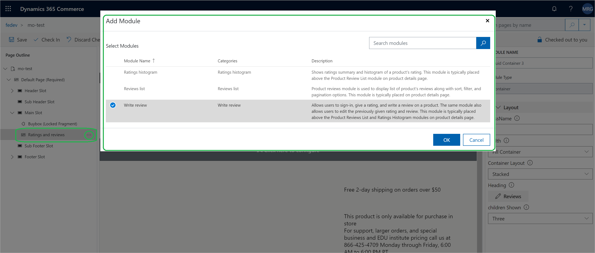
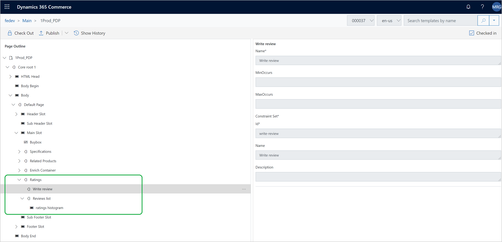
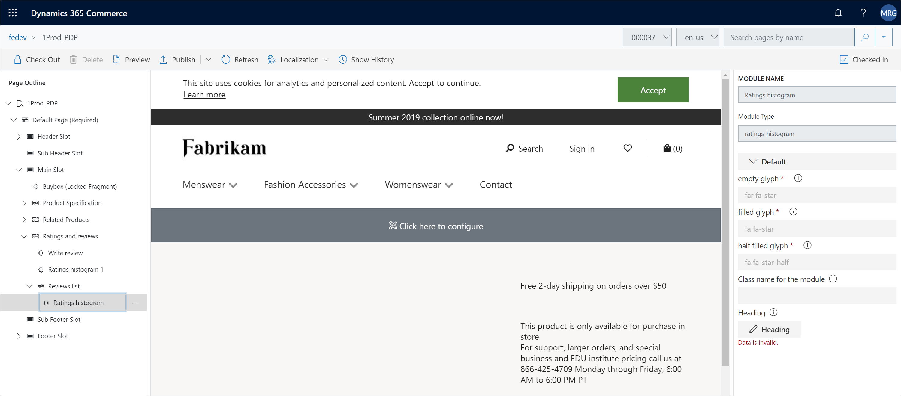

Bewertungs- und Prüfungsmodule
Important
Dynamics 365 Retail ist jetzt Dynamics 365 Commerce und bietet umfassende Handelsfunktionen für alle Kanäle – von E-Commerce über Shops bis hin zu Callcentern. Weitere Informationen zu diesen Änderungen finden Sie unter Microsoft Dynamics 365 Commerce.
Dieses Thema behandelt Bewertungen und Rezensionsmodule, die auf den Produktdetailseiten (PDPs) in Microsoft Dynamics 365 Commerce verwendet werden.
Übersicht
Bewertungen und Rezensionen auf E-Commerce-Websites helfen Kunden, sich über Produkte zu informieren, bevor sie eine Kaufentscheidung treffen, und sind auch ein Mechanismus zum Sammeln von Kundenfeedback zu Produkten.
Bewertungen werden in Produktlisteseiten, Kategorielistenseiten, Suchergebnisseiten und anderen Standortsseiten angezeigt.
Rating-Histogramme und Produktbesprechungen werden auf PDPs angezeigt. Eine Schaltfläche Eine Bewertun schreiben ermöglicht Kunden, Bewertungen und Prüfungen für ein Produkt senden. Diese PDP-Funktionen werden durch Bewertungen und Rezensionsmodule gesteuert.
Bewertungs- und Prüfungsmodule in PDPs
Drei Module zeigen die Zusammenfassungen der Beurteilungen und Prüfungen an auf PDPs:
- Modul Bewertung schreiben
- Modul Produktbewertungsliste
- Bewertungshistogrammmodul
Die folgende Abbildung zeigt, wie die Bewertungen und Module aussehen auf einer PDP.

Tip
Informationen darüber, wie PDP-Vorlagen und -Layouts optimiert werden, sodass Sie die Konfigurationen der Module für Beurteilungen und Prüfungen unter verschiedenen PDPs auf Ihrer E-Commerce-Webseite freigeben können, finden Sie unter. Vorlagen und Layoutüberblick.
Die folgende Abbildung zeigt, wie das Dialogfeld Modul hinzufügen Bewertungs- und Prüfungsmodule in Dynamics 365 Commerce darstellt. 
Modul Bewertung schreiben
Das Modul Bewertung schreiben enhält eine Schaltfläche Bewertung schreiben, bei der sich Benutzer anmelden, eine Bewertung zuweisen und eine Überprüfung eines Produkts schreiben können. Mit diesem Modul können Benutzer eine Bewertung oder Prüfung bearbeiten, die sie zuvor übermittelt haben. Dieses Modul wird in der Regel über den Produktbewertungs-Histogramm- und Produktbewertungslistenmodulen auf einem PDP angezeigt.
Die folgende Abbildung zeigt das Dialogfeld Eine Bewertung schreiben, das angezeigt wird, wenn ein Debitor Eine Bewertung schreiben auswählt. Der Debitor kann dieses Dialogfeld verwenden, um eine Bewertung und eine Prüfung zu übermitteln.
 Die folgende Tabelle zeigt die Eigenschaft des Rezensionsmoduls zum Schreiben, die im Autorentool konfiguriert werden muss.
| Eigenschaftenname | Wert | Eigenschaftbeschreibung |
|---------------|--------------|--------------------------------------|
| Name | Bewertung schreiben | Der Name des Moduls Bewertung schreiben |
Die folgende Tabelle zeigt die Eigenschaft des Rezensionsmoduls zum Schreiben, die im Autorentool konfiguriert werden muss.
| Eigenschaftenname | Wert | Eigenschaftbeschreibung |
|---------------|--------------|--------------------------------------|
| Name | Bewertung schreiben | Der Name des Moduls Bewertung schreiben |
Bewertungshistogrammmodul
Das Bewertungshistogrammmodul zeigt ein Bewertungshistogramm. Dieses Modul wird zwischen dem Modul Bewertung schreiben und dem Produktbewertungslistenmodul auf einem PDP angezeigt. Das Bewertungshistogrammmodul erfordert keine Konfiguration. Sie müssen das Modul in der PDP-Vorlage nur hinzufügen. Die folgende Abbildung zeigt, wie eine PDP-Vorlage in Dynamics 365 Commerce aussieht, wenn Prüfungs- und Bewertungsmodule zur Anzeige auf PDPs konfiguriert werden. 
Modul Produktbewertungsliste
Das Produktprüfungs-Listenmodul zeigt eine Liste der Produktprüfungen zusammen mit Sortierung, Filter, und Paginierungsoptionen an. Dieses wird normalerweise nach dem Bewertungshistogrammmodul auf einem PDP angezeigt. In der folgenden Tabelle wird die Eigenschaft für das Produktbewertungslistenmodul angezeigt, das im Erstellungstool konfiguriert werden muss.
| Eigenschaftenname | Wert | Eigenschaftbeschreibung |
|---|---|---|
| Auf jeder Seite angezeigte Bewertungen | 10 | Die Anzahl der Bewertungen, die gleichzeitig auf einem PDP angezeigt werden sollen. Schaltflächen Weiter und Vorherige werden eingeschlossen, damit Benutzer die Seiten der Bewertungen durchsuchen können. |
Bewertungshistogramm - Zusammenfassungsansicht
Das Produktprüfungs-Listenmodul enthält einen Slot, in dem Sie ein Bewertungshistogrammmodul hinzufügen können. Die folgende Abbildung zeigt, wie Sie ein Bewertungshistogrammmodul im Produktprüfungs-Listenmodul in Dynamics 365 Commerce hinzufügen können.
